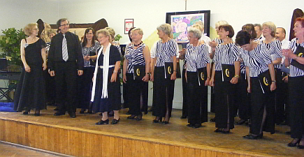
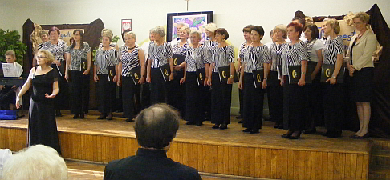
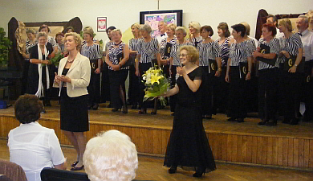
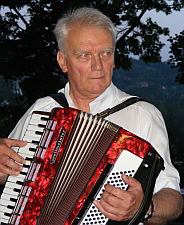
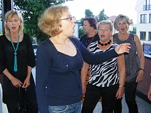

A tymczasem w Cameracie...
.
2011-06-28
Camerata, prawdę mówiąc jest już chórem uniwersyteckim. Występuje na wszystkich uroczystościach wielickiego Uniwersytetu Trzeciego Wieku. Tradycyjnie więc, śpiewa też na zakończeniu semestru.Gościnnie występuje Konrad Szota baryton, prywatnie mąż naszej pani dyrygent. Izabela Szota i Konrad Szota wystąpili jako soliści i w duecie.
Całości akompaniowała pani prof. Małgorzata Westrych.


Koncert bardzo podobał się studentom UTW. Na zakończenie koncertu były podziękowania i kwiaty.
Po oficjalnej części odbyło się spotkanie przy grillu oraz wspólne śpiewy.
 
Przygrywał nam na akordeonie Andrzej Kłyszewski.

© Stowarzyszenie Muzyczne Chór Camerata Wieliczka